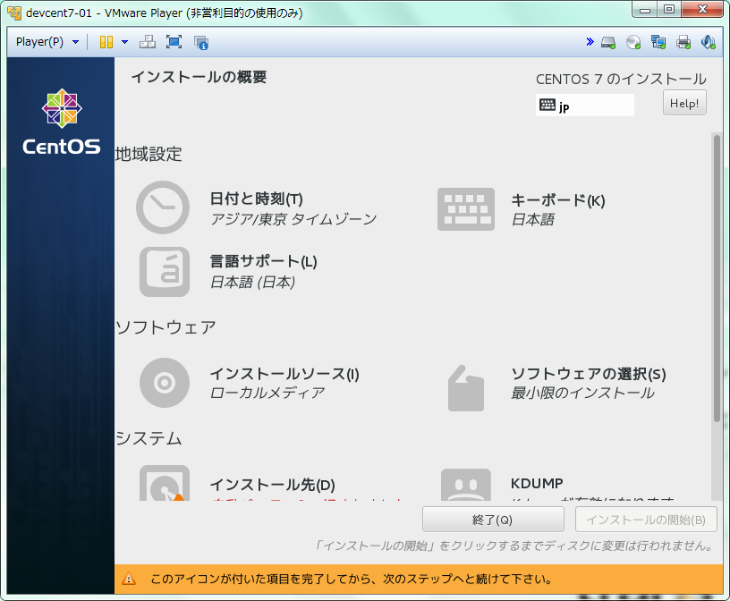
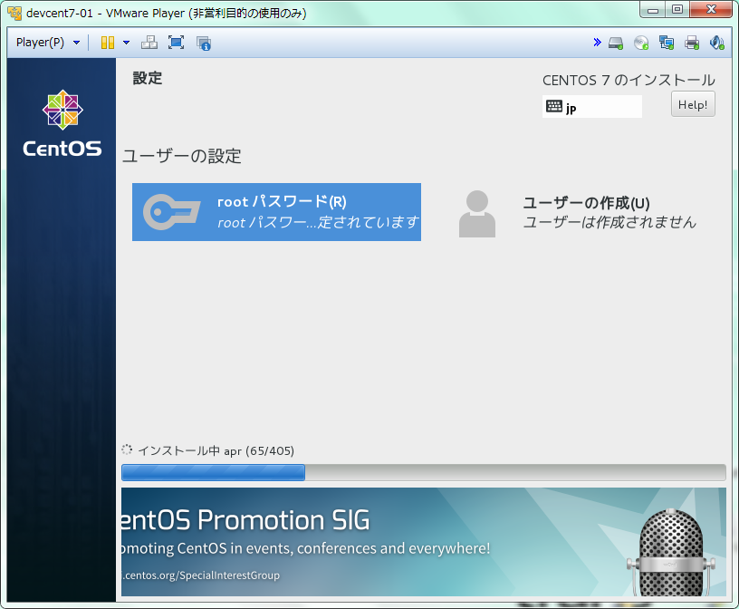
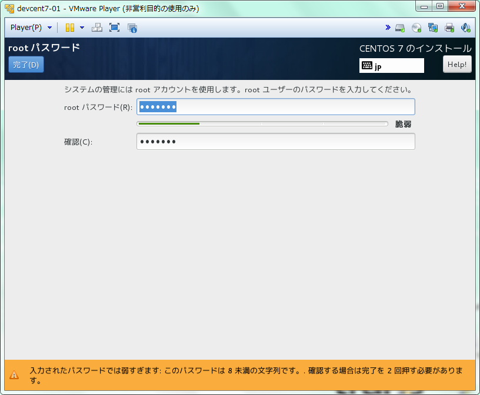
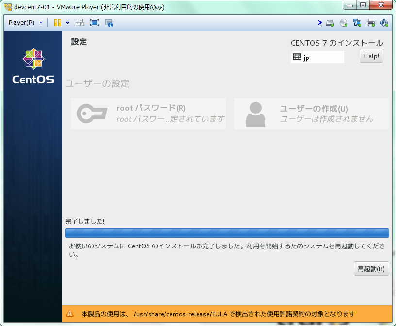

インストール
インストールの概要ページにある各項目を設定すると「インストールの開始」を選択できるようになる
インストールを進めると困る場合はここで各設定を改めて確認しておく

インストールを開始するとインストールウィザードが開始され、
合わせてOSユーザーのパスワード設定を行う画面となります。

インストールを開始するとOS管理者ユーザー情報、追加OSユーザー情報の入力を求められる
ここでOS管理者のrootユーザーのパスワードを設定しておく

パッケージのインストールが完了すると再起動を促されるので再起動してインストールは完了

インストール関連のログは下記に出力されるため、必要により退避させておく。
| logfile | value |
|---|---|
| /tmp/anaconda.log | Anaconda の全般メッセージ |
| /tmp/program.log | インストール中に実行された全外部プログラム |
| /tmp/storage.log | ストレージモジュールの詳細情報 |
| /tmp/packaging.log | yum および rpm パッケージのインストールメッセージ |
| /tmp/syslog | ハードウェア関連のシステムメッセージ |